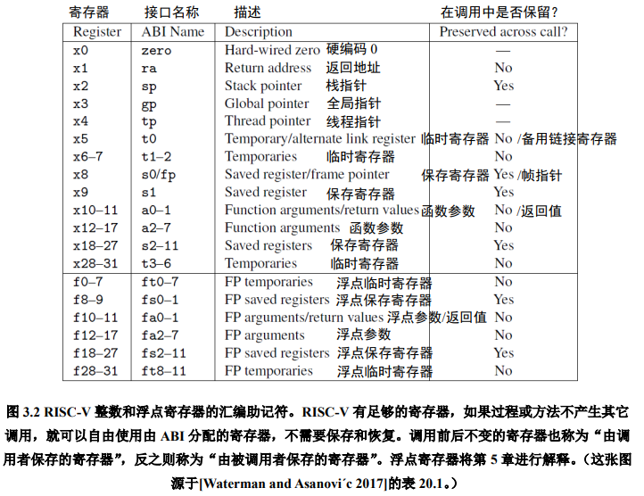
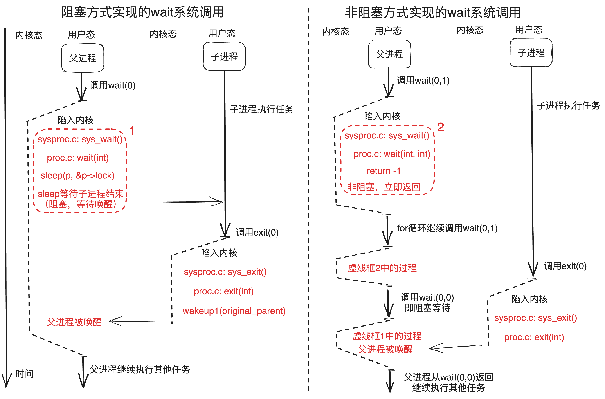
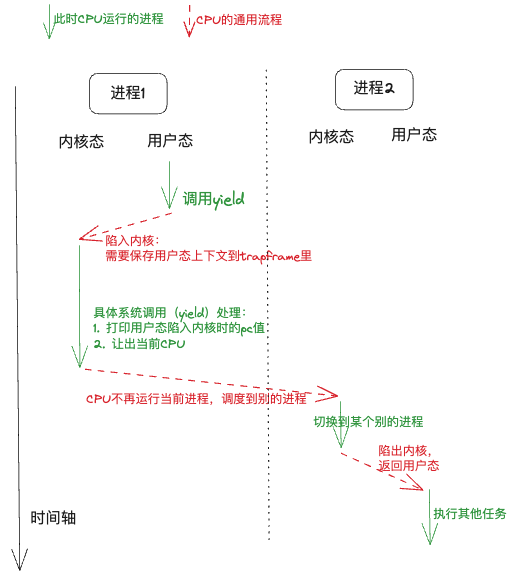

实验原理¶
提示
这一章讲述本次实验的实验原理，以下知识会大大帮助你理解xv6是如何工作的。但是你需要加以思考，并且将其一个一个串接起来，以形成一个整体的思维。
1. 系统调用¶
系统调用就是调用操作系统提供的一系列内核函数。由于用户程序运行在CPU的用户态（又称非特权模式，用户模式），无法直接访问系统硬件和操作系统中的系统数据，用户程序只能发出请求，然后由内核调用相应的内核函数来帮着处理，最后将结果返回给应用程序。
1.1 系统调用的使用：用户的权力¶
在第一个实验中，我们将系统调用和C语言的函数放在一起做了一定的说明。
“系统调用被 封装 为函数以向用户提供接口，用户程序可以通过函数调用的方式请求操作系统的服务”。从这里我们需要注意，虽然两者看起来一样，但是这是因为封装的结果。接下来我们简要介绍xv6是怎样封装的。
首先看user/user.h文件，我们可以看到对应有许多的函数接口，其中标识了系统调用和用户库（ulib）。但是我们只看到了封装的接口，那么实际上系统调用的实现是什么样的呢？
1.2 系统调用的接口：操作系统内核和用户程序的中间体¶
现在我们看到user/usys.pl文件，该脚本文件会在编译期间被执行，生成一个汇编文件usys.S。其对每一个系统调用抽象接口都生成了一个具体的实现，叫做entry。
1 #!/usr/bin/perl -w
2
3 # Generate usys.S, the stubs for syscalls.
4
5 print "# generated by usys.pl - do not edit\n";
6
7 print "#include \"kernel/syscall.h\"\n";
8
9 sub entry {
10 my $name = shift;
11 print ".global $name\n";
12 print "${name}:\n";
13 print " li a7, SYS_${name}\n";
14 print " ecall\n";
15 print " ret\n";
16 }
17
18 entry("fork");
19 entry("exit");
……
这段脚本中的print的内容实际就是RISC-V指令集的汇编语言。$name就是系统调用的名字，如fork，exit等，当脚本执行时，18行之后entry的内字符串会被填入$name。
系统调用步骤包括以下几步：
li a7, SYS_${name}\n：将系统调用号SYS_${name}（来自kernel/syscall.h）传给RISC-V CPU上的a7寄存器，这样内核就可以通过a7寄存器知道现在要处理的是什么系统调用。ecall：特殊指令，用来转入操作系统内核（ 关键 指令）。ret：操作系统内核执行完后会返回到这里，执行ret就结束了用户看到的系统调用，返回至用户程序。
你可以在编译后阅读user/usys.S，将其与上述脚本对应以便更好地理解。
拓展
在RISC-V指令集架构中，处理器通常分为M (Machine)、S (Supervisor)、U (User) 三种工作模式。一般情况下，用户程序运行在U模式，而操作系统内核运行在S模式。上文中的ecall (Environment Call)命令就是不同特权级之间的桥梁，例如用户程序执行ecall后，CPU会从U模式切换至S模式，同时将PC的值置为一个由内核预设的地址，进而切换至内核的执行流。ecall实际上是陷入(trap)的一种，想要了解更多细节可以自行阅读RISC-V手册。
1.3 系统调用的参数：寄存器传参¶
这里我们还忽略了一点，那就是系统调用还需要传递参数。实际上，从汇编的角度来看，当我们调用一个函数的时候，传入的参数一般会按照位置依次放在a0, a1, a2等以此类推的寄存器中。想要了解更多关于函数参数的细节可以自行阅读RISC-V手册。

也就是说，调用user/user.h中的函数接口后，参数已经存储于寄存器了，这个时候我们就原封不动地继续调用ecall，操作系统就可以通过a0, a1, a2等寄存器来获取参数了。此外，函数的返回值一般存储于a0寄存器。
提示
根据RISC-V标准规定，函数调用通过寄存器传递参数。在内核中可以通过argint、argaddr等函数获取系统调用的参数，分别对应整数和指针，它们都调用argraw来读取已保存的寄存器。比如，kernel/sycall.c中 argraw函数所描述的就是取出参数的过程。
static uint64 argraw(int n) {
struct proc *p = myproc();
switch (n) {
case 0:
return p->trapframe->a0;
case 1:
return p->trapframe->a1;
// ……
其中 trapframe就是用户进程的寄存器状态 （上下文，详见3.1 trapframe）。
1.4 系统调用的分发和实现：解耦合¶
按照之前所述，定义一个系统调用实际上很简单：将系统调用号的宏定义SYS_${name}添加在kernel/syscall.h，每次系统调用时根据a7寄存器传入的值判定具体的系统调用类型即可。
那么接下来我们面临的第一个问题是：内核怎么通过系统调用号（存在a7）来执行不同的系统调用函数。
提示
我们需要关注kernel/syscall.c中定义了一大段看起来就和系统调用有关的部分。这里可以分为两个部分，一个是 extern 进行标识的函数接口，另一个是以syscall为名的数组。
extern uint64 sys_chdir(void);
extern uint64 sys_close(void);
extern uint64 sys_dup(void);
extern uint64 sys_exec(void);
extern uint64 sys_exit(void);
// ……
static uint64 (*syscalls[])(void) = {
[SYS_fork] sys_fork, [SYS_exit] sys_exit, [SYS_wait] sys_wait, [SYS_pipe] sys_pipe,
[SYS_read] sys_read, [SYS_kill] sys_kill, [SYS_exec] sys_exec, [SYS_fstat] sys_fstat,
[SYS_chdir] sys_chdir, [SYS_dup] sys_dup, [SYS_getpid] sys_getpid, [SYS_sbrk] sys_sbrk,
[SYS_sleep] sys_sleep, [SYS_uptime] sys_uptime, [SYS_open] sys_open, [SYS_write] sys_write,
[SYS_mknod] sys_mknod, [SYS_unlink] sys_unlink, [SYS_link] sys_link, [SYS_mkdir] sys_mkdir,
[SYS_close] sys_close, [SYS_rename] sys_rename,
};
-
前者实际上声明了这些函数，这些函数的实现不必在这个文件中，而是分布在各个相关的代码文件中（一般放在
sys开头的文件中，包括sysproc.c与sysfile.c），我们在这些代码文件中实现好对应的函数，最后就可以编译出对应名字的汇编代码函数，extern就会找到对应的函数实现了。 -
后者则是将这些函数的指针都放在统一的数组里，并且数组下标就是系统调用号，这样我们在分辨不同系统调用的时候就可以很方便地用数组来进行操作了。
kernel/syscall.c中的syscall()函数就根据这一方法实现了系统调用的分发（通过不同系统调用号调用不同系统调用函数），请仔细阅读并尝试理解。 -
将两者合起来使用，可以使得系统调用的 实现 和系统调用的 分发 彼此 分离 ，这对函数编写者非常友好，但是会让初学者有些迷惑，这是需要注意的。
2. 举例：系统调用的实现¶
现在我们以一个具体的例子，来看看xv6是怎么实现系统调用的。我们准备挑选看起来朴实无华的系统调用sleep，因为它实际上暗藏凶险。
先来看张总图把握一下整体流程：

以下只对系统调用过程某几个关键点进行分析，其他相关代码/流程需要大家自行查阅代码：
2.1 用户程序调用¶
xv6关于sleep系统调用接口的声明在user/user.h。
/* user/user.h */
int sleep(int);
2.2 usys.S汇编¶
然而，user/user.h只是对函数原型进行了声明。具体做了什么事呢？这个定义是在usys.S中，详见1.2小节。
需要注意的是，usys.S汇编是由usys.pl（perl脚本）自动生成的。也就是，当你要增加新的系统调用时，不要修改usys.S，而是参考其他系统调用接口来修改usys.pl。
2.3 uservec汇编¶
当执行ecall指令后，内核会切换到supervisor mode。接着，内核执行的第一个指令是来自trampoline.S文件的uservec汇编函数。
2.4 usertrap¶
之后，代码跳转到了由C语言实现的usertrap函数中（trap.c），判断如果是来自用户的系统调用则执行syscall函数。
提示
一般进入usertrap函数有三种情况：
1. syscall系统调用，是由用户进程主动调用ecall指令来实现的。
2. device interrupt设备中断，比如：磁盘设备完成了读写请求操作。
3. exception异常，是用户进程或内核程序的illegal instruction导致的，比如：除0错误，或引用无效的虚拟地址。
void usertrap(void) {
if (r_scause() == 8) {
// system call
// ……
} else if ((which_dev = devintr()) != 0) {
// ok
} else {
printf("usertrap(): unexpected scause %p pid=%d\n", r_scause(), p->pid);
printf(" sepc=%p stval=%p\n", r_sepc(), r_stval());
p->killed = 1;
}
// ……
2.5 syscall¶
syscall函数里有一个表单，根据传入的代表系统调用的数字进行查找，并执行具体实现系统调用功能的函数。对于这个例子来说，这个函数就是sys_sleep。
2.6 sys_sleep¶
其代码可见 kernel/sysproc.c line55-74：
55 uint64
56 sys_sleep(void)
57 {
58 int n;
59 uint ticks0;
60
61 if(argint(0, &n) < 0)
62 return -1;
63 acquire(&tickslock);
64 ticks0 = ticks;
65 while(ticks - ticks0 < n){
66 if(myproc()->killed){
67 release(&tickslock);
68 return -1;
69 }
70 sleep(&ticks, &tickslock);
71 }
72 release(&tickslock);
73 return 0;
74 }
-
参数：系统调用
sleep有一个参数，用来告知操作系统sleep的持续时间。但是这里怎么是void？- 这是因为xv6又进行了一次解耦合，通过一个额外的函数获取参数，他们以
arg开头，具体见kernel/syscall.c。
- 这是因为xv6又进行了一次解耦合，通过一个额外的函数获取参数，他们以
-
获得进程的状态：执行系统调用的时候，参数不会告诉xv6自己到底是什么程序。因此，xv6需要额外的调用来弄清楚，现在到底是什么程序正在运行？
- 关键的函数是
myproc()，这个函数将返回指向当前进程的PCB（也就是进程控制块，详见3. 进程控制块）的指针（struct proc *），里面有程序的各种信息。
- 关键的函数是
-
sleep的实现逻辑：这里，主要就是根据各个不同的系统调用，实现自身应的逻辑即可。现在简要介绍sleep逻辑。- line 61：获取参数
- line 63：给时钟加锁，获取当前的时间
- line 65：比较是否到了
sleep结束的时间 - line 66-69：进程结束了就退出，什么也不做
- line 70：否则继续睡眠
- line 72-73：到时间了则释放时间的锁，返回程序，
sleep结束。
2.7 执行完后返回用户空间¶
当sleep完成之后，返回至syscall函数。在syscall函数中调用usertrapret，用于完成部分方便在C代码实现的返回用户空间的工作。还有一些工作只能在汇编语言完成，即trampoline.s中的userret函数。最后，这个函数执行sret指令，切回用户空间，执行用户空间ecall的下一条指令ret。当ret执行完后，返回调用函数的位置，执行用户程序的下一条语句。
以上，即是系统调用过程中大致的代码执行流程。
3. 进程控制块（PCB）¶
相信同学们在理论课上已经学习过了进程的概念，并且应该也知道进程控制块是 保存进程各种信息 的地方。
在xv6当中，我们可以在proc.h: struct proc也就是proc结构体当中看到xv6对于进程的PCB的定义：
struct proc {
struct spinlock lock;
// p->lock must be held when using these:
enum procstate state; // Process state
struct proc *parent; // Parent process
void *chan; // If non-zero, sleeping on chan
int killed; // If non-zero, have been killed
int xstate; // Exit status to be returned to parent's wait
int pid; // Process ID
// these are private to the process, so p->lock need not be held.
uint64 kstack; // Virtual address of kernel stack
uint64 sz; // Size of process memory (bytes)
pagetable_t pagetable; // User page table
struct trapframe *trapframe; // data page for trampoline.S
struct context context; // swtch() here to run process
struct file *ofile[NOFILE]; // Open files
struct inode *cwd; // Current directory
char name[16]; // Process name (debugging)
};
在这里我们提几个与实验相关的成员：state、parent、xstate、trapframe、context。
state：用以表征当前进程的状态信息，在proc.h: enum procstate当中选取；parent：指向当前进程的父进程的指针，用来 唤醒父进程 或 查找子进程 ；xstate：当前进程的退出状态，用于返回给父进程的wait函数中的status参数；trapframe：进程在陷入内核时初始化的信息，包含内核栈、用户态传参等信息，详细内容我们接下来介绍；context：进程的上下文信息，包含ra和sp以及callee-saved的寄存器；
3.1 trapframe¶
在这里我们对trapframe这一概念进行详细介绍。
我们知道，当进程从用户态陷入内核时，由于内核态也需要用到寄存器，因此需要将用户态的上下文（寄存器信息）保存起来，以便于后面返回用户态时重新恢复这些上下文（寄存器）。
struct trapframe {
/* 0 */ uint64 kernel_satp; // kernel page table
/* 8 */ uint64 kernel_sp; // top of process's kernel stack
/* 16 */ uint64 kernel_trap; // usertrap()
/* 24 */ uint64 epc; // saved user program counter
/* 32 */ uint64 kernel_hartid; // saved kernel tp
/* 40 */ uint64 ra;
/* 48 */ uint64 sp;
/* 56 */ uint64 gp;
/* 64 */ uint64 tp;
/* 72 */ uint64 t0;
/* 80 */ uint64 t1;
/* 88 */ uint64 t2;
/* 96 */ uint64 s0;
/* 104 */ uint64 s1;
/* 112 */ uint64 a0;
/* 120 */ uint64 a1;
/* 128 */ uint64 a2;
/* 136 */ uint64 a3;
/* 144 */ uint64 a4;
/* 152 */ uint64 a5;
/* 160 */ uint64 a6;
/* 168 */ uint64 a7;
/* 176 */ uint64 s2;
/* 184 */ uint64 s3;
/* 192 */ uint64 s4;
/* 200 */ uint64 s5;
/* 208 */ uint64 s6;
/* 216 */ uint64 s7;
/* 224 */ uint64 s8;
/* 232 */ uint64 s9;
/* 240 */ uint64 s10;
/* 248 */ uint64 s11;
/* 256 */ uint64 t3;
/* 264 */ uint64 t4;
/* 272 */ uint64 t5;
/* 280 */ uint64 t6;
};
kernel_sp）、内核页表指针（kernel_satp）等内核态相关的信息。
同时，trapframe也保存了全套的用户态寄存器信息，以及 用户态陷入内核时对应的PC值（epc） 。
4. exit系统调用工作流程¶
在上面关于系统调用的通用执行流程的基础上，为了便于同学们更好的完成实验，我们在此为同学们详细介绍exit系统调用的工作流程。
首先我们先来看一张图：

exit系统调用与其他的系统调用一样，在陷入内核之前都需要进行相应的ecall、usertrap等操作，这一部分可以参考上面的举例：系统调用的实现。我们在这里不再进行详细介绍，我们着重介绍exit在内核态的主体函数（proc.c: exit(int)）的工作流程。
4.1 进程资源回收¶
exit系统调用的主要功能实际上就是退出当前进程，那么退出当前进程就必须 先要将当前进程的资源进行回收 ，否则会导致内存泄漏等一系列奇怪的问题。
我们接下来从xv6的源码来分析进程主要需要哪些方面的资源回收。
4.1.1 打开文件回收¶
首先回收当前进程打开的所有文件：
// Close all open files.
for (int fd = 0; fd < NOFILE; fd++) {
if (p->ofile[fd]) {
struct file *f = p->ofile[fd];
fileclose(f);
p->ofile[fd] = 0;
}
}
4.1.2 子进程回收¶
子进程回收需要多步进行：
- 唤醒初始进程（initproc），为切换当前进程的子进程的父进程做准备
acquire(&initproc->lock); wakeup1(initproc); release(&initproc->lock); - 保存当前进程的父进程指针，为后续唤醒做准备
acquire(&p->lock); struct proc *original_parent = p->parent; release(&p->lock); - 将当前进程的 子进程 的父进程指针更改成initproc，即理论课上提到： 所有孤儿进程会被initproc管理
希望同学们能够自己查看acquire(&original_parent->lock); acquire(&p->lock); // Give any children to init. reparent(p);proc.c: reparent(struct proc *p)函数，并理解里面查找当前进程的子进程的逻辑，这会对你解决任务一有帮助 (= - 唤醒当前进程的父进程
关于为什么唤醒父进程：因为父进程此时可能处在wait()当中，而xv6的wait的实现是让当前进程睡眠，等待被唤醒，如果子进程退出时不唤醒父进程，那么父进程将会一直睡下去...
wakeup1(original_parent);
我们的任务二就是在更改wait的这一实现。
4.2 更改当前进程状态¶
p->xstate = status;
p->state = ZOMBIE;
proc.h: struct proc）当中。
4.3 进入调度器等待被回收¶
// Jump into the scheduler, never to return.
sched();
panic("zombie exit");
5. wait系统调用（阻塞与非阻塞）的工作流程¶
同样的，我们先来看张图：

5.1 阻塞方式的wait¶
就像刚刚图片当中看见的，阻塞方式实现的wait会在经历系统调用的通用调用流程之后来到内核中的wait主体函数：proc.c: wait(int)。
在wait函数当中，我们希望学有余力的同学可以自行阅读代码，理解其查找僵尸子进程的逻辑。当然不理解也是可以完成我们的任务二的 (=。
首先，xv6原本的实现当中，在proc.c: wait(int)函数的最后几行：
for (;;) {
// 一大堆代码，作用就是用来查找是否存在僵尸子进程，有就返回对应的僵尸子进程的pid
// Wait for a child to exit.
sleep(p, &p->lock); // DOC: wait-sleep
}
proc.c: sleep(void *chan, struct spinlock *lk)函数的时候：
// Go to sleep.
p->chan = chan;
p->state = SLEEPING;
5.2 非阻塞方式的wait¶
我们在了解了阻塞方式的wait之后，相比同学们已经猜到了该如何实现非阻塞的wait了：没错，就是跳过sleep！
但是，阻塞实现和非阻塞实现的wait在实际操作系统实现当中都有大用处，比如：
可以通过使用非阻塞的wait来判断子进程是否准备好需要的资源，如果没有，父进程可以先并行执行其他任务，等待需要子进程提供的资源时，使用阻塞wait来保证程序的语义正确，这是一种可行的并行优化手段。
所以我们必须 新增一个标志参数flags 来表示是否进行非阻塞wait，而不是直接将原有的阻塞wait改成非阻塞。
我们假设这个flags=1时表示进行非阻塞wait，那么我们的测试用例流程就可以用上图的右半边来展现。
这里需要大家实现flags=1时，不进行sleep，而是直接返回-1。为此，你可能需要知道：
1. 如何获取用户态传入的参数
2. 在proc.c: wait(int)当中为了保证进程PCB的操作的互斥性，需要上锁acquire(&p->lock)，所以 记得在返回之前解锁 ：release(&p->lock)
6. yield进程挂起的语义介绍¶
我们知道，每个进程的运行过程其实就是CPU在该进程的指令段逐条取指执行，那么当CPU跳转到另外一个进程的指令段进行取指执行时，便发生了进程的切换。
我们在操作系统理论课上已经学习过进程调度是怎么一回事了，那么yield（进程挂起）是什么意思呢？我们知道进程运行时需要占用CPU，如上所述，那么进程挂起就是让该进程让出CPU，从而使CPU可以调度到别的进程，如下图所示：

7. 参考资料¶
[1] xv6 book, Sections 4.3 and 4.4 of Chapter 4
[2] Related source files:
- The user-space code for systems calls is in
user/user.handuser/usys.pl. - The kernel-space code is
kernel/syscall.h,kernel/syscall.c. - The process-related code is
kernel/proc.handkernel/proc.c.